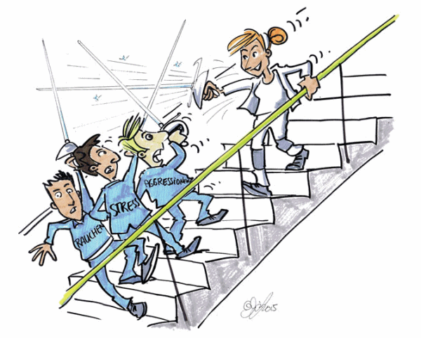

In den Mitgliedsbetrieben der BG BAU bestimmen vor allem körperliche Belastungsfaktoren den Arbeitsalltag.
Aber auch die im Betrieb gelebte Kultur hat einen Einfluss auf das Engagement, die Qualität der Arbeit und auf die Gesundheit. "Weiche Faktoren" wie Stimmung, Verhalten und Kommunikation kommen stärker in den Fokus.
In diesem Kontext spielen – um nur einige Beispiele
zu nennen – psychische Belastungen, Stress, Führung
und Wertschätzung eine bedeutende Rolle.
Wichtig für ein gutes Betriebsklima: Seien Sie Vorbild
und gestalten Sie gute Rahmenbedingungen.
Wir wollen Ihnen einige in der Praxis bewährte Tipps anbieten, die für ein gutes Betriebsklima sorgen, die Motivation der Beschäftigten steigern und Sie und Ihre Mitarbeiter beim Erhalt der Gesundheit unterstützen.
Lassen Sie sich von den Vorschlägen inspirieren und prüfen Sie, welche Ihnen nutzen. Sehen Sie die Broschüre als einen Werkzeugkoffer unter dem Motto "Damit es gelassen läuft". Erwarten Sie keine Wunder. Um neue Verhaltens- und Denkweisen zur Gewohnheit werden zu lassen, müssen Sie diese über tausendmal wiederholen. Aber keine Sorge, jede Reise beginnt mit dem ersten Schritt!
"Eine Angewohnheit kann man nicht aus dem Fenster werfen.
Man muss sie die Treppe hinunterboxen,
Stufe für Stufe."
Mark Twain

"Wer rastet – der rostet" sagt der Volksmund und meint, wer sich keiner Herausforderung stellt und sich nicht belastet, baut ab.
Belastungen sind neutral. Sie bezeichnen alle Einflüsse, die von außen auf einen Menschen einwirken, wie z. B. Aufgaben, Verantwortung, Organisation. Die Auswirkungen einer Belastung auf den Menschen nennen wir Beanspruchung. Ob die Wirkung einer Belastung gut oder schlecht ist, hängt von der Dauer und Art der Einwirkung, den individuellen Fähigkeiten und den Anlagen des Menschen ab.
(Fast) jede Belastung kann zu einer psychischen Beanspruchung führen. Im optimalen Fall werden Ressourcen wie Selbstvertrauen aufgebaut. Im negativen Fall kann eine Stressreaktion eine Fehlbeanspruchung (z. B. Krankheiten, Selbstzweifel, Antriebsverlust, Konzentrationsprobleme) verursachen.
Nehmen wir zum Beispiel Lärm als Belastung. Die körperliche Beanspruchung kann zu einem Hörschaden führen. Zugleich ist dies eine psychische Belastung, weil der Lärm die Konzentration beeinträchtigt.
Als Unternehmer und Führungskraft haben Sie einen Einfluss auf die Belastung Ihrer Mitarbeiter. Mit guter Kommunikation, Führung und einem gelassenen Umgang mit Stress können Sie etwas für die Gesundheit Ihrer Mitarbeiter tun.
Gefährdungsbeurteilung auch für psychische Belastungen |
|
|
Es steht im Arbeitsschutzgesetz: Die psychischen Belastungen müssen im Rahmen der Gefährdungsbeurteilung erfasst und bewertet werden. Bei Bedarf müssen Maßnahmen vorgeschlagen und umgesetzt werden. Dabei geht es um eine menschengerechte Gestaltung aller Arbeitsbedingungen, um langfristig die Arbeitsfähigkeit und Gesundheit der Mitarbeiter zu erhalten. Empfehlungen zur Umsetzung der Gefährdungsbeurteilung psychischer Belastungen sind in einer Broschüre zusammengefasst, die zwischen Unfallversicherungsträgern, Ländern, Gewerkschaften und Arbeitgeberverbänden abgestimmt wurde. |
|
In der nachstehenden Liste werden psychische Belastungsfaktoren genannt, die in der GDA-Leitlinie "Beratung und Überwachung bei psychischer Belastung am Arbeitsplatz" (S. 19ff) als wesentliche Belastungsfaktoren aufgeführt werden. Diese Auswahl ist nicht abschließend: Je nach Tätigkeitsanforderungen und Bedingungen im konkret zu betrachtenden Bereich können auch andere, hier nicht beschriebene Faktoren relevant sein. Ebenso kann eine Vorabbetrachtung ergeben, dass in dem konkret zu betrachtenden Bereich nur ein Teil der hier beschriebenen Belastungsfaktoren bedeutsam ist und entsprechend berücksichtigt werden muss.
Weitergehende Informationen zu den Belastungsfaktoren sind im Webportal des Arbeitsprogramms Psyche zu finden: www.gda-psyche.de
Merkmalsbereiche und Inhalte der Gefährdungsbeurteilung
| 1. | Merkmalsbereich: Arbeitsinhalt/Arbeitsaufgabe |
Mögliche kritische Ausprägung |
| 1.1 | Vollständigkeit der Aufgabe |
Tätigkeit enthält:
|
| 1.2 | Handlungsspielraum |
Der/die Beschäftigte(n) hat/haben keinen Einfluss auf:
|
| 1.3 | Variabilität (Abwechslungsreichtum) |
Einseitige Anforderungen:
|
| 1.4 | Information/Informationsangebot |
|
| 1.5 | Verantwortung |
|
| 1.6 | Qualifikation |
|
| 1.7 | Emotionale Inanspruchnahme |
|
| 2. | Merkmalsbereich: Arbeitsorganisation |
Mögliche kritische Ausprägung |
| 2.1 | Arbeitszeit |
|
| 2.2 | Arbeitsablauf |
|
| 2.3 | Kommunikation/Kooperation |
|
| 3. | Merkmalsbereich: Soziale Beziehungen |
Mögliche kritische Ausprägung |
| 3.1 | Kollegen |
|
| 3.2 | Vorgesetzte |
|
| 4. | Merkmalsbereich: Arbeitsumgebung |
Beispiele für negative Wirkungen |
| 4.1 | Physikalische und chemische Faktoren |
|
| 4.2 | Physische Faktoren |
|
| 4.3 | Arbeitsplatz- und Informationsgestaltung |
|
| 4.4 | Arbeitsmittel |
|
| 5. | Merkmalsbereich: Neue Arbeitsformen |
Beispiele für negative Wirkungen |
| Diese Merkmale sind nicht Gegenstand des Aufsichtshandelns, spielen aber für die Belastungssituation der Beschäftigten eine Rolle. |
|